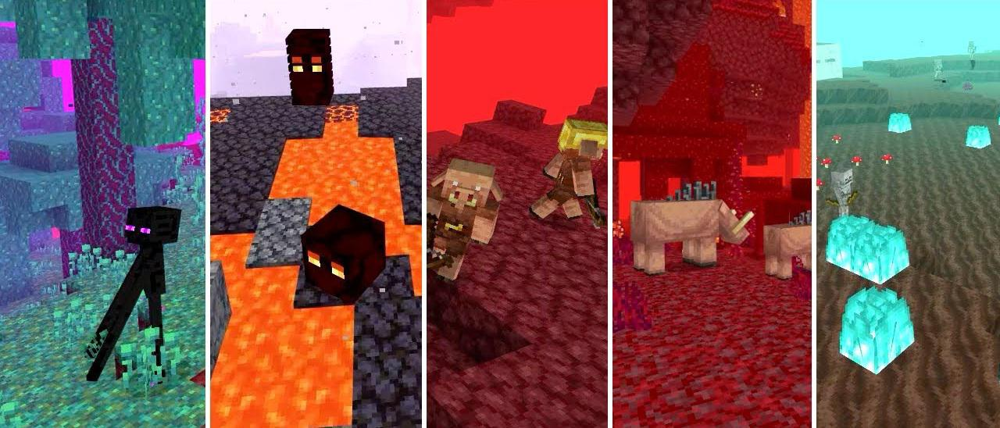

Dimensões
Overworld
O mundo principal onde os jogadores começam. Caracterizado por diversos biomas, incluindo florestas, desertos, oceanos, montanhas e outros. Tem ciclo normal de dia e noite, abundância de recursos naturais, mobs amigáveis e hostis.
Principais Biomas
- Floresta (Forest):
- Árvores variadas, grama, flores e animais como lobos e ovelhas.
- Planície (Plains):
- Terreno plano com grama, flores, cavalos e vilas.
- Deserto (Desert):
- Areia, cactos, coelhos e templos do deserto.
- Montanhas (Mountains):
- Terreno alto, cabras e minérios expostos.
- Savana (Savanna):
- Árvores de acácia, erva seca, e vilas.
- Taiga:
- Árvores de pinheiro, lobos e às vezes aldeias nevadas.
- Pântano (Swamp):
- Árvores de carvalho escuro, água rasa, lodo e bruxas.
- Tundra de Gelo (Ice Plains):
- Coberto de neve, ursos polares e iglus.
- Jungla (Jungle):
- Árvores altas, vinhas, pandas e templos da selva.
- Oceano (Ocean):
- Água vasta, com biomas de recifes de corais, monumentos oceânicos e criaturas marinhas.
Estruturas Notáveis:
- Vilas, templos do deserto, templos da selva, mansões,
- monumentos oceânicos, minas abandonadas e fortalezas.

Nether
O Nether é uma perigosa dimensão, parecida com o inferno, cheia de fogo, lava e muitas criaturas hostis. Pode ser acessada através de portais Nether, feitos a partir de obsidiana e fogo. Essa dimensão não possui ciclo dia e noite e nem clima. O Nether apresenta um terreno único em forma de caverna, sem céu. Lugares distantes ficam permanentemente envoltos por uma densa neblina. Atualmente, o Nether possui apenas um bioma que prevalece por toda a dimensão, chamado de ruínas do Nether. O Nether é dividido em vários biomas bem como na superfície, cada um deles com características únicas de terreno, criaturas, estruturas, a cor da neblina do ambiente, etc.
Principais Biomas do Nether
- Desperdício do Nether (Nether Wastes):
- O bioma clássico do Nether, com vastos campos de netherrack e alguns lagos de lava.
- Vale de Areia das Almas (Soul Sand Valley):
- Grandes áreas de areia das almas, fogo azul, fósseis e ghasts.
- Floresta Carmesim (Crimson Forest):
- Árvores carmesim, hoglins, piglins e flora vermelha.
- Floresta Distorcida (Warped Forest):
- Árvores azul-esverdeadas, endermen e flora distorcida.
- Deltas de Basalto (Basalt Deltas):
- Formações rochosas de basalto e magma, com magma cubes.
Estruturas Notáveis:
- Fortalezas do Nether, Bastiões em ruínas e Fósseis do Nether.

The End
O End consiste em uma ilha grande cercada de muitas ilhas pequenas distantes, todas principalmente compostas de pedra do End. O céu sem estrelas e o vazio são ambos compostos de um padrão vazio e estático. O ciclo de dia e noite está ausente, semelhante ao Nether, sendo substituído por uma luz pouco perceptível constante. Uma vez que o jogador entra no End, a única maneira de voltar é ao morrer ou ao vencer a batalha contra o dragão Ender. Para acessar o End, o jogador precisa ir atrás do processo de encontrar uma fortaleza usando olhos de ender, encontrar a sala do portal, e ativar o portal do end.
Principais Biomas do End
- Ilhas do End (The End Islands):
- Grandes ilhas de end stone, coros de plantas e shulkers.
- Terras do End Médio (The End Midlands):
- Áreas entre ilhas maiores com menos endermen.
- Terras Altas do End (The End Highlands):
- Ilhas grandes com plantas de coros e cidades do End.
- Terras Baixas do End (The End Barrens):
- Áreas desoladas e estéreis ao longo das bordas das ilhas.
Estruturas Notáveis:
- Cidades do End, Navios do End e Torres de obsidiana com cristais do End